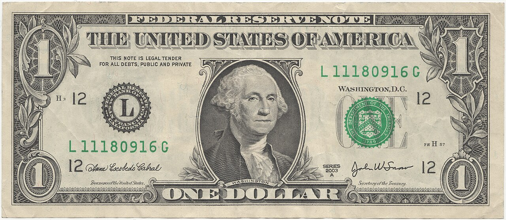

AQShda bank hisobi va kredit tarixi: muhojirlar uchun asoslar
Bank hisobini ochish, SSN va ITIN farqi, FICO kredit ballari va noldan kredit tarixini qurish — AQShda yashovchi muhojirlar uchun faktlarga asoslangan ma’lumotnoma.

AQShda yangi hayot boshlagan muhojirlar uchun bank hisobi ochish va kredit tarixini qurish — moliyaviy barqarorlikning ilk qadamlaridir. Quyida ushbu jarayon Amerika iste’molchilarni himoya qilish byurosi (CFPB), Ichki daromadlar xizmati (IRS), Federal depozitlarni sug‘urtalash korporatsiyasi (FDIC) va FICO kabi rasmiy manbalar asosida bayon etiladi. Bu umumiy ma’lumot bo‘lib, moliyaviy maslahat emas.
Bank hisobini ochish
CFPB ma’lumotiga ko‘ra, hisob ochish uchun odatda soliq to‘lovchi raqami — SSN (Social Security Number) yoki ITIN talab qilinadi. Shaxsni tasdiqlovchi hujjat sifatida ko‘p banklar AQSh yoki shtat guvohnomasini so‘raydi, ammo ayrim banklar va kredit ittifoqlari xorijiy pasport yoki konsullik guvohnomasini ham qabul qiladi. Qoidalar bankdan bankka farq qiladi — bu qonuniy kafolat emas.
Joriy (checking) hisob — kundalik to‘lovlar va tez-tez pul yechish uchun mo‘ljallangan. Jamg‘arma (savings) hisob — pulni chetga yig‘ish uchun bo‘lib, odatda foiz keltiradi. FDIC depozit sug‘urtasi har bir omonatchiga, har bir sug‘urtalangan bankda, har bir egalik toifasi bo‘yicha 250 000 dollargacha qoplaydi; bu himoya avtomatik, ariza talab qilinmaydi.
SSN va ITIN farqi
ITIN (Individual Taxpayer Identification Number) — IRS tomonidan beriladigan 9 raqamli soliq raqami bo‘lib, federal soliq maqsadida raqamga ehtiyoji bor, lekin SSN olishga haqli bo‘lmagan shaxslarga beriladi. U W-7 shakli orqali so‘raladi. ITIN ishlash huquqini bermaydi, Ijtimoiy ta’minot nafaqalarini bermaydi va immigratsiya maqomiga daxldor emas — u faqat soliq maqsadida ishlatiladi.
ITIN yordamida kredit tarixini qurish mumkin: kredit karta beruvchilar SSNsiz ham kredit byurolariga hisobot yuborishi mumkin, va o‘z vaqtidagi to‘lovlar kredit hisobotida aks etadi. Biroq bu avtomatik emas — tasdiqlash beruvchi tashkilotning qaroriga bog‘liq.
FICO kredit balli
FICO kredit balli 300 dan 850 gacha bo‘lgan oraliqda o‘lchanadi. FICO ma’lumotiga ko‘ra, ball besh omildan hisoblanadi: to‘lovlar tarixi — 35%, qarz miqdori (kreditdan foydalanish darajasi) — 30%, kredit tarixining uzunligi — 15%, kredit turlari aralashmasi — 10% va yangi kredit — 10%. Eng muhim ikki omil — to‘lovlar tarixi va qarz miqdori.
Ball darajalari (Experian bo‘yicha FICO oraliqlari): 580 dan past — yomon; 580–669 — o‘rtacha; 670–739 — yaxshi; 740–799 — juda yaxshi; 800–850 — a’lo. Ya’ni 670 dan yuqori ball odatda yaxshi hisoblanadi.
Noldan kredit tarixini qurish
Kredit tarixi bo‘lmaganlar uni bir necha yo‘l bilan qura oladi. Ta’minlangan kredit karta (secured credit card) — siz naqd pul (masalan, 500 dollar) garov qo‘yasiz va u odatda kredit limitiga aylanadi; mas’uliyatli foydalanish tarix quradi. Kredit-quruvchi qarz (credit-builder loan) — kichik bo‘lib-bo‘lib to‘lanadigan qarz bo‘lib, pulni oxirida olasiz. Boshqa yo‘llar: birovning hisobiga vakolatli foydalanuvchi (authorized user) sifatida qo‘shilish.
Eng kuchli omil — har doim o‘z vaqtida to‘lash. Kreditdan foydalanish darajasini past ushlash tavsiya etiladi: 30% dan oshmaslik keng qo‘llaniladigan qoida, ammo bu maksimal chegara — eng yuqori ballga egalar odatda 10% dan pastda turadi va yaxshi ball uchun qarz saqlash shart emas.
Kredit hisobotlaringizni tekshiring
AQShda uchta milliy kredit byurosi bor: Equifax, Experian va TransUnion. AnnualCreditReport.com sayti orqali har haftada har bir byurodan bepul kredit hisobotini olish mumkin — bu federal darajada ruxsat etilgan yagona rasmiy sayt (2023-yil oktabrdan haftalik bepul kirish doimiy). O‘xshash nomli soxta saytlardan ehtiyot bo‘ling.
Eslatma
Bu maqola faqat umumiy ma’lumot beradi; bank va kredit qoidalari vaqt o‘tishi bilan o‘zgarishi mumkin. Aniq shartlar bank va beruvchiga qarab farq qiladi. Rasmiy manbalar: CFPB, IRS, FDIC, FICO va FTC.